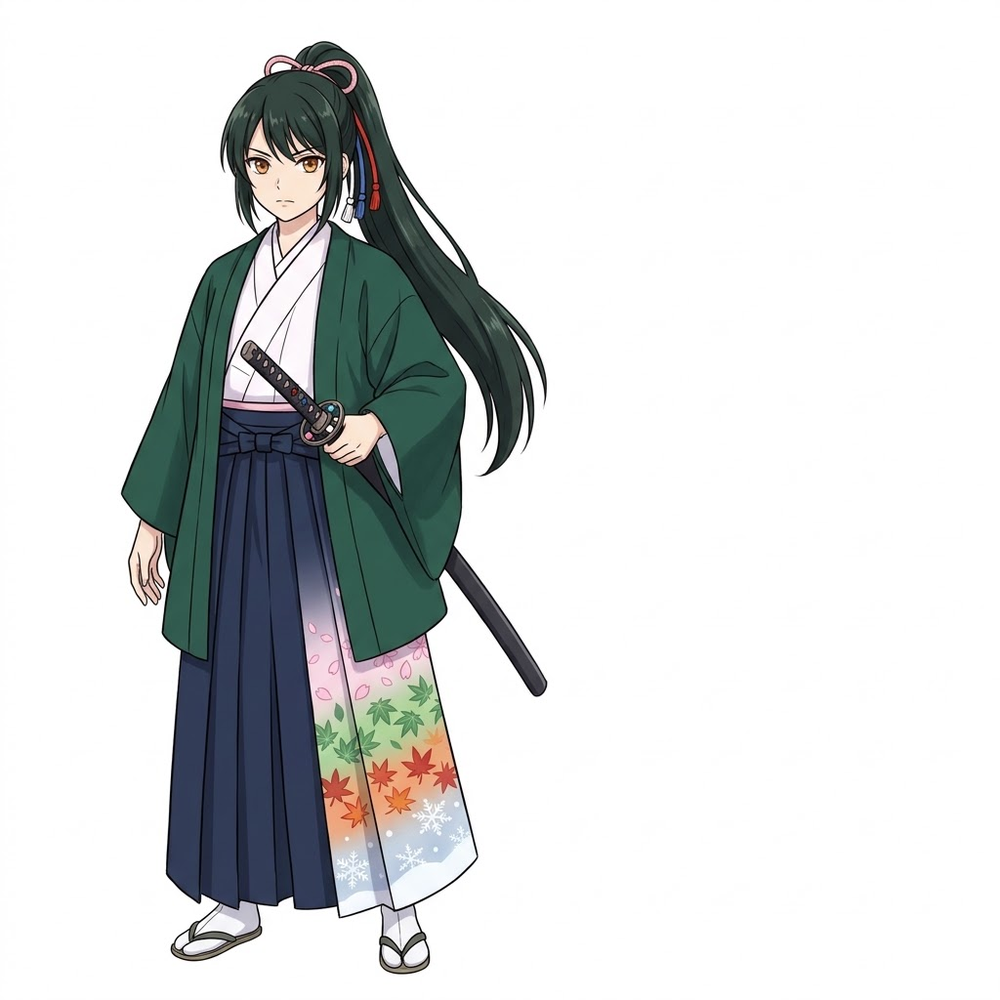

〈四季の剣士〉
環
たまき。環流の剣士。季節を巡らせて戦う緑がかった黒琥珀深い緑紺
- 年
- 18歳くらい
- 髪
- 腰まである、深い緑がかった黒髪。桜色・青・朱・白の4色の組紐で、高い位置にひとつにまとめる
- 目
- 琥珀色。凛とした表情
- 服
- 白い着物に、深い緑の羽織、紺の袴。袴のすそに、桜・青葉・紅葉・雪の柄
- 刀
- 鍔が輪の形で、桜色・青・朱・白の4つの小さな玉がはまっている
- カード
- 場に出た時、季節を1つ進める。季節が変わるたび、攻撃力+1